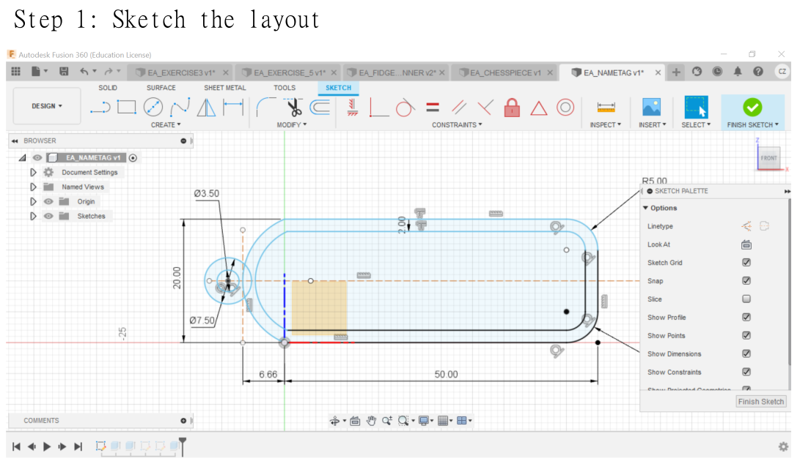
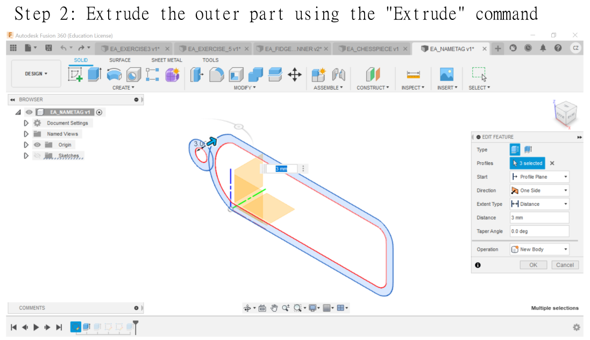
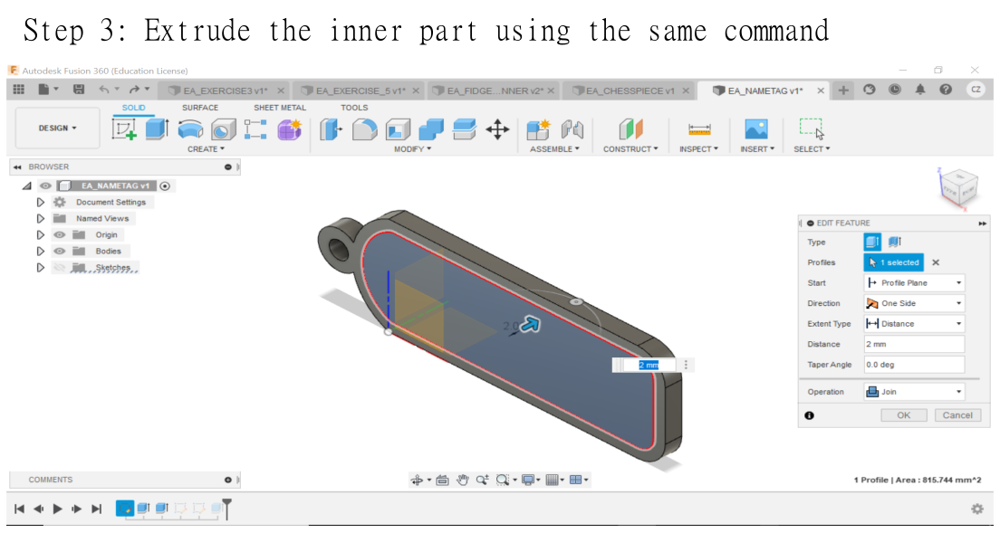
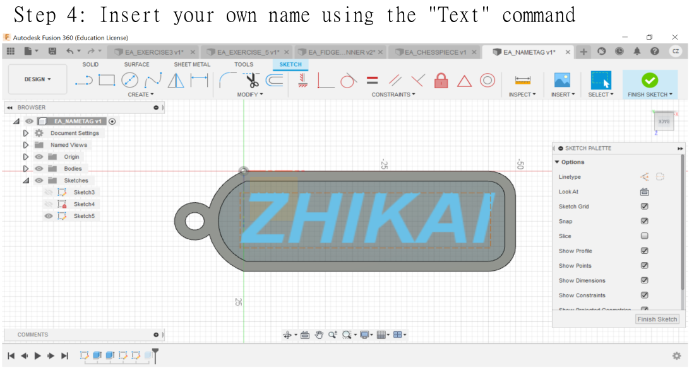
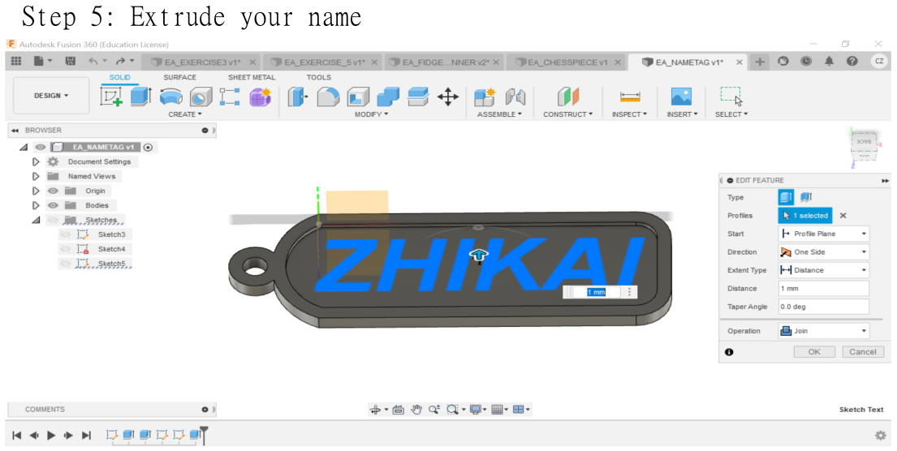
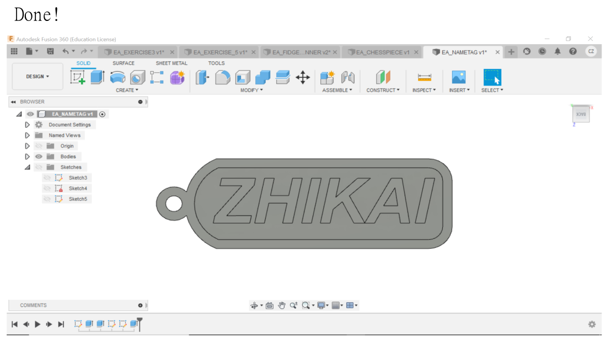
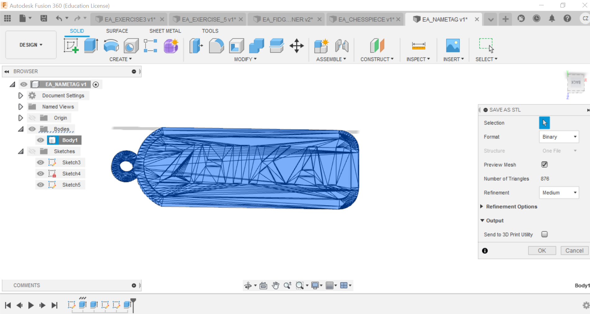

3D Printing
Nametag design
(Design period: 29th March 2021 ~ 29th March 2021)
During the 1st day of "EA: 1st Hands-ON Session", we had to design a personalised name tag.
Here is a run-down of the steps to design a nametag using Fusion360:
To begin sketching the layout, I drew a 50 mm by 20 mm rectangle by clicking on the “2-point rectangle” command and then typing the respective dimension values.
Afterwards, I drew a tangent arc at the left-side of the rectangle and adjusted its dimension to 6.66 mm from the starting point by drawing a line and using the “Sketch dimension” command. I then drew a small circle next to the arc. However, a mistake I made as shown in the screenshot above is that when to sketch the inner part of the nametag as well.
Through this mistake, I have learnt to sketch the parts that needs to be extruded first before sketching other parts that is to be extruded later.
As soon I clicked finish sketch, I clicked on the “Extrude” command and extruded the whole nametag by 3mm.
As a consequence to the mistake I made in step 1, I had to re-sketch the inner part of the nametag and extruded it by -2mm.
Next, I inserted my name onto the nametag by creating a new sketch and click on the “Text” command. I adjusted the size and position of my name and set it to bold and italics.
I extruded my name by 1 mm.
With that, I have completed designing the nametag using Fusion360.
Note: Apart from the mistake I discussed earlier, I have also made another mistake whereby I design the nametag on a different axis.Therefore, rotation is required to view the side of the nametag with my name on it when viewing the design on Fusion360.
Here is the design of the nametag:
Other Fusion360 projects:
Here is a list of my other Fusion360 projects:
1. Chess piece:
Documentation:
Experience:
Skills learnt:
2. Sketch Ex03:
Documentation:
Experience:
3. Sketch Ex05:
Documentation:
Experience:
4. Fidget spinner:
Documentation:
Experience:
(Design period: 29th March 2021 ~ 30th March 2021)
In this project, I used the “Revolve” command to form a 3D chess piece figure after sketching half of the chess piece. Afterwards, I drew a cylinder and adjusted the position of the cylinder using the “Move” command. With that, I extruded the cylinder to form a dent on the crown of the queen piece. To make the dent cover every side of the crown, I used the “Circular pattern” command. Finally, I used “Acetal Resin (white)” and “Base Material - Opaque” for the body and base of the chess piece, respectively.
Personally, I found experience of designing this chess piece to be particularly fun as I enjoyed designing the chess piece and I also found the chess piece to be aesthetically pleasing.
I had learnt how and when to use the “Revolve” command to speed up my design process. For instance, I can use that command on symmetrical objects with a round base. I had also learnt to use the “Circular pattern” command to ensure the dents covered all sides.of circular surfaces.
(Design period: 29th March 2021 ~ 29th March 2021)
In this project, I followed the dimensions of the figure on Calaméo. I extruded the “L-side” of the figure after sketching it. Afterwards, I sketched a large circle and a smaller circle. I extruded the upper-right formed by the 2 circles so that an arc is formed on the figure. Then, I sketched the smaller circle again and extruded the lower-half portion such that a hole is formed.
Overall, I found this project simple and I was able to complete it in a short period of time.
(Design period: 29th March 2021 ~ 29th March 2021)
In this project, I also followed the dimensions of the figure from the same source and I extruded the flat base of the figure after sketching it. From there, I sketched the 2 base of the figure’s leg and extruded them according to their height. Afterwards, I sketched 2 circles of different sizes and extruded the upper ring of the formed by the two circles to form a ring. Same as Ex03, I sketched a smaller circle again and extruded the lower-half of it to form a hole.Finally, I repeat what I had done for the other leg.
Overall I found this project simple eventhough it has slightly more steps to take to design the figure.
(Design period: 29th March 2021 ~ 29th March 2021)
As for this project, I used several commands such as “inscribe polygon”, “circular pattern” and “Tangent arc” to sketch the layout of the fidget spinner. After sketching, I extruded it and sketch another circle for the center part of the fidget spinner. I extruded the circle and use the “Fillet’ command on the sides of the fidget spinner. Finally, I applied “Gold-polished” for the appearance of the fidget spinner.
I found this project interesting because I get to use several different commands to construct my design. The design process was not too complicated.
3D printing
After I had completed designing the nametag, I saved the file as STL format and imported it to Ultimaker Cura. I adjusted position of the nametag and the settings which were instructed by the lecturers. With that, I clicked the slice button and I saved the file for 3D printing. The 3D printer used is Ultimaker 2+.

End